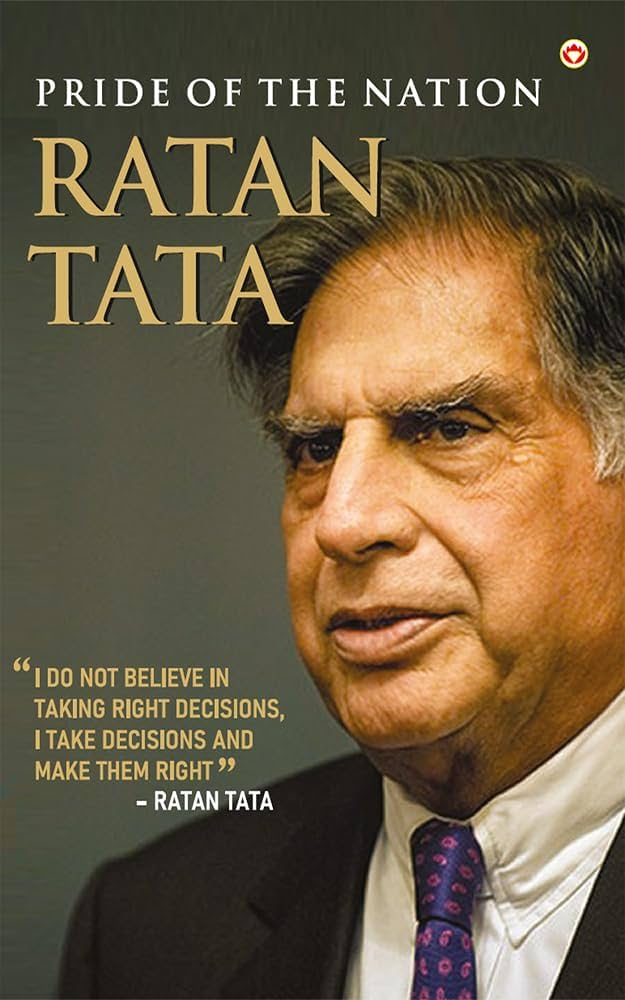

Ratan Naval Tata who 28 December 1937 – 9 October 2024 was an Indian billionaire , industrialist and philanthropist. He served as the chairman of Tata Group and Tata Sons from 1991 to 2012, and he held the position of the interim chairman from October 2016 to February 2017.
In 2000, he received the Padma Bhushan, the third-highest civilian honour in India, followed by the Padma Vibhushan, the country's second-highest civilian honour, in 2008.[5]Ratan Tata was the son of Naval Tata, who was adopted by Ratanji Tata, son of Jamsetji Taattended the Harvard Business School Advanced Management Program in 1975.
He joined the Tata Group in 1962, starting on the shop floor of Tata Steel.
He later succeeded JRD Tata as chairman of Tata Sons upon the latter's retirement in 1991.During his tenure, the Tata Group acquired Tetley, Jaguar Land Rover, and Corus, in an attempt to turn Tata from a largely India-centric group into a global business.
Throughout his life, Tata invested in over 40 start-ups, primarily in a personal capacity, with additional investments through his firm, RNT Capital Advisors.
# Tata Education and Development Trust.
# Tata Innovation Center at Cornell Tech.
# MIT Tata Center of Technology and Design.
# Contributions to Taj Hotel Staff victims